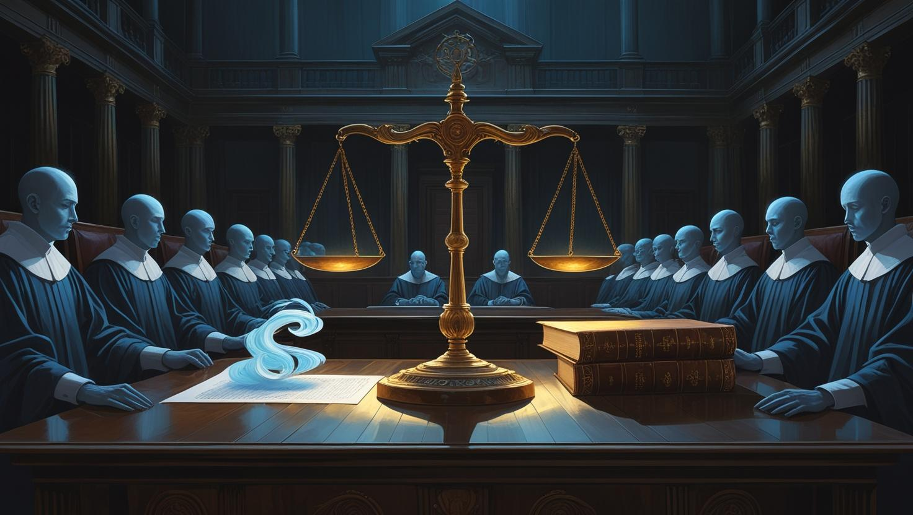
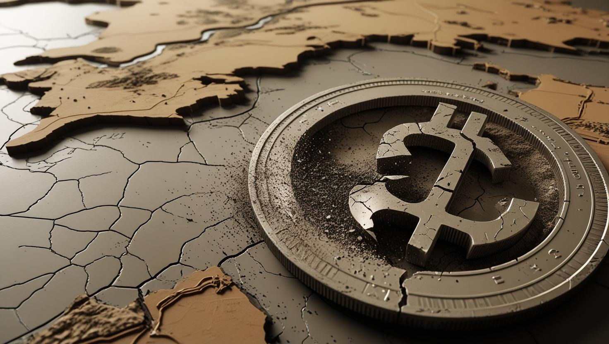
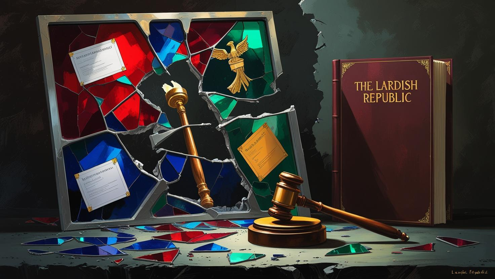

The End of the Republic
The final chapter in the brief, yet impactful, history of the Lardish Republic unfolded on December 11, 2024, at 10:00 AM Central Lardish time. On this somber day, President Lard Lapudding delivered a nationally televised address that irrevocably marked the beginning of a historic closure for the nation. Faced with an unprecedented and seemingly insurmountable challenge—the complete absence of any individual willing or able to assume leadership following his impending resignation—President Lapudding made the momentous decision to declare the official dissolution of the Lardish Republic, an act slated to become effective just weeks later, on December 31, 2024. His poignant farewell statement, delivered with a tangible sense of gravity, declared, "All good things must come to an end," a sentiment that perfectly encapsulated the somber mood that would envelop the country in the weeks that followed, as citizens grappled with the impending end of their republic.
Peaceful Disbandment and Legal Challenges
Following President Lapudding's significant announcement, the various institutions that comprised the Republic—including the Regional House of Lardish Representatives (REHAR), the House of Deputies, and the Lardish Senate—were all peacefully disbanded. This process unfolded without significant incident or resistance, underscoring a commitment to orderly transition. However, the fundamental legality of the dissolution itself was immediately brought into question. The nation's highest judicial body, the Lardish Supreme Constitutional Court, promptly convened to hold an urgent hearing on the matter. Deliberations focused intently on a crucial constitutional question: whether the President’s extraordinary decision was, in fact, permissible under the existing legal framework, or if it amounted to an act of treason against the Republic. Ultimately, after a period of careful and thorough analysis, the Court ruled with seven votes in favor and two against formally accepted the dissolution as a legitimate and legal act. This landmark ruling affirmed that the truly extraordinary circumstances facing the nation justified the President's unprecedented move, a decision that proved instrumental in preventing potential widespread political unrest and allowing the country to transition into its new reality without resorting to violent conflict.
The Aftermath: A Free Land Without Successor States
In stark contrast to many historical instances of state dissolution, the Lardish Republic
notably left no
successor states in its wake. Instead, its former territory effectively reverted to a free
land, unified
under no centralized government. This profound absence of any single, overarching governing authority
immediately created a unique political vacuum, a situation that simultaneously sparked elements of both hope
and profound uncertainty among the Lardish population.
The economic ramifications of this dissolution were immediate and severe. The Lardish
Pound, which had
previously been carefully regulated and backed by the central government, instantaneously lost its
foundational support and, consequently, its value. This led to a rapid and dramatic currency
collapse,
profoundly impacting the daily lives of citizens. Despite this internal economic turmoil, there were no
discernible international sanctions or external intervention, primarily because the Lardish Republic’s
status and economic footprint were, in the broader global context, largely symbolic rather than
strategically critical.
Public Reaction and Legacy
The population collectively mourned the Republic’s unexpected end, with public reaction characterized by a
complex mix of sadness and quiet resignation. Many citizens openly expressed a deep and palpable sense of
loss for the democratic ideals that had been pursued and the genuine progress that had been achieved over
the preceding years of the Republic's existence. The crucial role played by the Lardish Supreme Constitutional Court
in legally affirming the dissolution, rather than condemning it, was widely seen as a key factor in
mitigating potential unrest and ensuring a relatively peaceful transition.
President Lapudding himself quietly retired from public life following the dissolution, publicly citing
personal challenges that, he stated, fundamentally hindered his ability to fully fulfill his presidential
duties in the face of such overwhelming circumstances. His legacy remains a subject of complex and nuanced
historical debate: he was undeniably a leader who skillfully steered a nation through the profound
transitions from monarchy, through periods of war, and into the establishment of a republic, yet he was
ultimately the figure who oversaw its peaceful, albeit unexpected, end. Historians continue to view the
dissolution of the Lardish Republic as a poignant cautionary tale—a stark reminder of political exhaustion
and the inherent fragility of democratic institutions, particularly in nascent states. Conversely, many
others remember it not as a failure, but as a dignified and pragmatic conclusion to a bold, albeit brief,
experiment in self-governance and national identity.